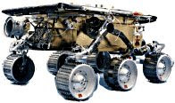

Davranış Bazlı Robotlar (Behavior-Based Robots)
Yıllar boyunca programcılar bazı program mimarilerinin tekrar tekrar çıktığını farkettiler. Bir fikrin üst üste kullanılmasının sebebi, o çözümün, belli bir problem için çok uygun olmasıdır. Bu 'belli' çözümler, yazılım dünyasında 'kalıplar' diye bilinir. Kalıplar, birkaç nesne modeli ve bu nesnelerin arasındaki bağlantılardır. Bildiğiniz üzere bir robotu programlamak, görsel programcılıktan çok değişiktir; o yüzden robot yazılım kalıpları değişiktir. En ünlü robot kalıplarından biri sinek usulü denen, 'davranış kontrol' kalıbıdır. Davranış kontrol ilk kez Rodney Brooks tarafında, MIT yapay zeka bölümünde tanımlanmıştı. Bu metottan önceki yapay zeka yazılımları, çok miktarda veri, ve mikroişlemci gücü gerektiriyorlardı; Bu yüzden robotun anlık yapması gereken değişimleri hızlı yapmakta zorluk çektiler. Eski stiller, etraftaki dünyayı büyük bir veri modeli ile tanımlamaya uğraşmıslardı. Brooks bulduğu metodu sinek dünyasından aldı. Brooks farkettiki, bir sineğin hareketleri ve etrafına olan tepkileri cok başarılı. İlginç olan, sineklerin bütün bunu ufacık bir beyin ile başarmasıdır.
Eğer bir sineği bir bilgisayar ile karşılaştıracak olsak, bir sineğin uçucu bellek (RAM) kapasitesinin çok düşük olduğunu soyleyebilirdik. Zaten bir sineğin hazızasının çok düşük olduğu kanıtlanmıştır. Sinekleri, köpekleri eğitir gibi eğitme çabalarının boşa çıkmasının sebebi budur. Sineklerin başarısının temelinde, bir çok 'ufak' davranışı birbirine zincirleyip arka arkaya işletmebilmek yatar. Bu sayede bir sinek etrafındaki değişimlere çok çabuk ayak uydurabilir. Ve hattâ bu davranışlar, sineğin beynine doğuştan 'işlenmiştir' yani memeli hayvanların sonradan oğrendiği gibi öğrenmesine gerek yoktur. Brooks biraz önce bahsettiğimiz metodu tabiatı izleyerek geliştirdi. Davranış temelinde iki oluş vardır. Algılayıcılar (girdi) ve hareketler (çıktı). Bu zâten bir tek robotlar için değil, bütün organizmalar için geçerli değil midir? Mesela bir duvar üzerinde oturan bir sinek düşünün. Bu sinek, her dakika, etrafındaki durumu algılıyacılarını kullanarak tarıyordur. Eğer bir algılayıcı uyarılırsa, bu olay sinek organizmasi içinde tetikleyici bir etki yaratır, ve sinek buradan daha once tanımlanmış bir hareketi uygular.

Tetikleyici algı tek bir tâne olabilir, fakat çoğunluk zamanda tetikleyici bir kac hareket olması gerekir ki sinek bir şeyler yapsın. Davranış kavramı için bir örnek verelim. Meselâ duvarda oturan sinek bacak tüylerinde rüzgar estiğini hissediyorsa, kalkıp uçmaya başlaması pek akıllıca olmayacaktır. Sineğin hayatta kalabilmesi için belli algıların, belli hareketlere bağlanması çok önemlidir. İşte bu algı--hareket çiftlerine 'davranış' diyoruz. Davranış hareketleri çok basit olabilir, mesela ileri/geri gitmek gibi. Çok zor olan hareketler bir odadaki cisimlerin yapay zeka tarafından algılanması olabilir. Bir davranış, organizmanin belli bir süre içinde izlediği bir program parçasıdır. Davranış kontrol kalıbını, bir durumdan öteki duruma geçiş olarak düşünebilirsiniz. Meselâ, eğer birisine e-mektup yazıyorsanız, mektup yazma durumundasınızdır. Fakat mideniz guruldamaya başlarsa kalkıp mutfağa gidersiniz, ve yemek yeme durumuna girersiniz. Mektup yazma durumu, yemekten daha değişik ufak hareketler gerektirir. Ufak ve basit davranışları birbirine bağlarsak, bayağı olumlu, çetrefılli büyük davanış kalıpları yaratabilirsiniz. Algılıyacı sinyaller, sadece bir durumdan ötekine geçiş yaparken kullanılmayabilir. Bazen, algının kendisi hareket içinde kullanılabilir. Mesela eğer davranış bir odanın içinde cisimlerin yerini saptaması gerekiyorsa, bunu yapmak için algılayıcıları kullanmak gerekecektir. Bazı davranışlar için, algılayılıcılar, şart tespit için kullanılır. Mesela bir itfaye robotu düşünün. Isı ölçüm algısını, hem ateşe yaklaşmak, hem de ateş çok yükseldiğinde ateşten 'kaçmak' için kullanabilir. Yani, orta düzey hareket ateşe yaklaşmayı, en üst düzey hareket ateşten kaçmayı programlamıştır.
Bunun tespiti için aynı işi ölçüm algısı kullanılır.
Davranış: Isı ara
Şart: Isı başka alanda daha yüksek
Hareket: Isıya doğru yönel
Öncelik: Düşük
Davranış: Ateşi söndür
Şart: Ateş çok yakında
Hareket: Ateşe CO2 püskürt
Öncelik: Orta
Davranış: Ateşten kaç
Şart: Isı 80 derecenin üzerine çıktı
Hareket: Ateşten uzaklaş
Öncelik: Çok yüksek
Bir davranışın etkiye girmesi, illâ ki 'dıştan' bir algı sebebi ile olmayabilir. Bazen içten tetikli algılar da olabilir, meselâ robotun kendi saati 2 dakika geçtikten sonra bir sinyal verir; ve bunun sonucu bir hareket ateşlenir. Bu durumda robotun iç saati bir nevi zaman algısı olarak görülebilir. Meselâ bir inşaatçi robotu, eline aldığı tuğla sayısını algı olarak kullanıp, bir hareket ateşleyebilir, bu hareket tuğlalari taşıyıp merkez bir noktaya atmaktır. Hareketlerin pratik hareketler olması da gerekmez. Bazı gördüğüm robotlar, mutlu halden üzgün hale geçiyorlardı. Mesela Star Wars benzeri R2D2 robotu mutlu halden sıkılgan hale geçebilir, ya da üzgün hâle. Eğer robot uzun sure önüne bir şey çıkmadan yürürse, sıkılgan duruma geçer. Bu durumlar robotun etrafında ne gördüğüne bağlıdır; aynen insanlarda olduğu gibi, değil mi?
Bazen, robotun elektronik beyni içinde, harekete geçmek isteyen birden fazla davranış olabilir. Robotun kafası karışmadan gerekli olan davranışı seçmesi için, davranışların bir 'önceliği' olması gerekir. Mesela bir hayvanın belli başlı bazi hedefleri vardır. Bu hedefler, yemek, çiftlesmek, kendini korumak ve küçük çocuklarını korumaktır. Bu davranışların bazıları ötekilerden daha onemli olabilir, ama hepsi de bütün organizma neslinin tükenmemesi için onemlidir. En önemli davranış yemek olabilir; çünkü her hayvan cinsinin önemli 'öteki' hedefleri için açlıktan ölmemek tabii ki önemlidir. Bu yüzden yemek yemeyi davranışlar arasında en önemlisi zannedebilirdik. Fakat, tam yemek yerken başka bir hayvan saldırırsa, yemeğe devam etmek yararsızdır.
Demek ki, kendini korumak en üst davranıştır. Robotlara kıyaslarsak, pillerini değiştirmek robot için en önemli davranış olabilir. Pil azalınca, pil doldurma istasyonuna gitmesi gerekir. Bu yüzden robot programının öteki davranışları yarıda kesip, pil doldurmayı önceliğe getirmesi en önemli davranıştır. Böyle durumlarda, yüksek davranışın, alcak davranışıi 'bastırdığı' söylenir. Bu demektir ki, her anda, sâdece tek bir davranış faal olabilir. İlk başta bu robotlar için cok sınırlı gibi gelebilir; fakat tabiata bakarsak, canlılar hakikaten her anda sadece tek bir şeyi yapabilirler. Aynı anda birkaç şeyi yapamazlar.
Yukarı